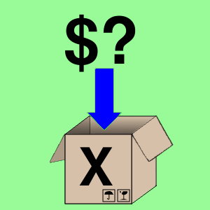
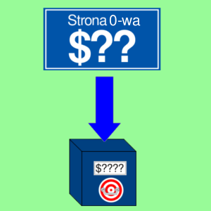
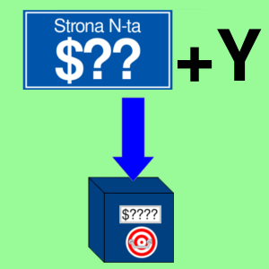

LDX
Ładowanie do rejestru X
Opis

Operacja polegająca na wczytaniu wartości z pamięci do rejestru X.
Odpowiada to instrukcji w języku wysokiego poziomu: X = MEM[$??].
Komplementarnym rozkazem do LDX jest STX.
Operacja wpływa na flagi: N i Z.
Tabela opkodów
| Opkod | Tryb adresowania | Czas wykonywania (cykle) |
|---|---|---|
| $A2 |  |
2 |
| $A6 |  | 3 |
| $B6 |  | 4 |
| $AE |  |
4 |
| $BE |  |
4* |
* Rozkaz wykonuje się o jeden cykl dłużej, kiedy nastąpiło przekroczenie strony